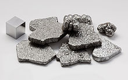

Iron
|  | |||||||||||||||||||||||||||||||||||||||||||||||||||||||||||||||||||||||||||||||||||||||||||||||||||||||||||||||||||||||||||||||||||||||||||||||||||||||||||||||||||||||||||||||||||||||||||||||||||||||||||||||||||||||||||||||||||||
|
Spectral lines of iron
|
|||||||||||||||||||||||||||||||||||||||||||||||||||||||||||||||||||||||||||||||||||||||||||||||||||||||||||||||||||||||||||||||||||||||||||||||||||||||||||||||||||||||||||||||||||||||||||||||||||||||||||||||||||||||||||||||||||||
| General properties | |||||||||||||||||||||||||||||||||||||||||||||||||||||||||||||||||||||||||||||||||||||||||||||||||||||||||||||||||||||||||||||||||||||||||||||||||||||||||||||||||||||||||||||||||||||||||||||||||||||||||||||||||||||||||||||||||||||
|---|---|---|---|---|---|---|---|---|---|---|---|---|---|---|---|---|---|---|---|---|---|---|---|---|---|---|---|---|---|---|---|---|---|---|---|---|---|---|---|---|---|---|---|---|---|---|---|---|---|---|---|---|---|---|---|---|---|---|---|---|---|---|---|---|---|---|---|---|---|---|---|---|---|---|---|---|---|---|---|---|---|---|---|---|---|---|---|---|---|---|---|---|---|---|---|---|---|---|---|---|---|---|---|---|---|---|---|---|---|---|---|---|---|---|---|---|---|---|---|---|---|---|---|---|---|---|---|---|---|---|---|---|---|---|---|---|---|---|---|---|---|---|---|---|---|---|---|---|---|---|---|---|---|---|---|---|---|---|---|---|---|---|---|---|---|---|---|---|---|---|---|---|---|---|---|---|---|---|---|---|---|---|---|---|---|---|---|---|---|---|---|---|---|---|---|---|---|---|---|---|---|---|---|---|---|---|---|---|---|---|---|---|---|---|---|---|---|---|---|---|---|---|---|---|---|---|---|---|---|
| Name, symbol | iron, Fe | ||||||||||||||||||||||||||||||||||||||||||||||||||||||||||||||||||||||||||||||||||||||||||||||||||||||||||||||||||||||||||||||||||||||||||||||||||||||||||||||||||||||||||||||||||||||||||||||||||||||||||||||||||||||||||||||||||||
| Pronunciation | /ˈaɪ.ərn/ EYE-urn |
||||||||||||||||||||||||||||||||||||||||||||||||||||||||||||||||||||||||||||||||||||||||||||||||||||||||||||||||||||||||||||||||||||||||||||||||||||||||||||||||||||||||||||||||||||||||||||||||||||||||||||||||||||||||||||||||||||
| Appearance | lustrous metallic with a grayish tinge | ||||||||||||||||||||||||||||||||||||||||||||||||||||||||||||||||||||||||||||||||||||||||||||||||||||||||||||||||||||||||||||||||||||||||||||||||||||||||||||||||||||||||||||||||||||||||||||||||||||||||||||||||||||||||||||||||||||
| Iron in the periodic table | |||||||||||||||||||||||||||||||||||||||||||||||||||||||||||||||||||||||||||||||||||||||||||||||||||||||||||||||||||||||||||||||||||||||||||||||||||||||||||||||||||||||||||||||||||||||||||||||||||||||||||||||||||||||||||||||||||||
|
|||||||||||||||||||||||||||||||||||||||||||||||||||||||||||||||||||||||||||||||||||||||||||||||||||||||||||||||||||||||||||||||||||||||||||||||||||||||||||||||||||||||||||||||||||||||||||||||||||||||||||||||||||||||||||||||||||||
| Atomic number | 26 | ||||||||||||||||||||||||||||||||||||||||||||||||||||||||||||||||||||||||||||||||||||||||||||||||||||||||||||||||||||||||||||||||||||||||||||||||||||||||||||||||||||||||||||||||||||||||||||||||||||||||||||||||||||||||||||||||||||
| Standard atomic weight (±) | 55.845(2)[1] | ||||||||||||||||||||||||||||||||||||||||||||||||||||||||||||||||||||||||||||||||||||||||||||||||||||||||||||||||||||||||||||||||||||||||||||||||||||||||||||||||||||||||||||||||||||||||||||||||||||||||||||||||||||||||||||||||||||
| Element category | transition metal | ||||||||||||||||||||||||||||||||||||||||||||||||||||||||||||||||||||||||||||||||||||||||||||||||||||||||||||||||||||||||||||||||||||||||||||||||||||||||||||||||||||||||||||||||||||||||||||||||||||||||||||||||||||||||||||||||||||
| Group, block | group 8, d-block | ||||||||||||||||||||||||||||||||||||||||||||||||||||||||||||||||||||||||||||||||||||||||||||||||||||||||||||||||||||||||||||||||||||||||||||||||||||||||||||||||||||||||||||||||||||||||||||||||||||||||||||||||||||||||||||||||||||
| Period | period 4 | ||||||||||||||||||||||||||||||||||||||||||||||||||||||||||||||||||||||||||||||||||||||||||||||||||||||||||||||||||||||||||||||||||||||||||||||||||||||||||||||||||||||||||||||||||||||||||||||||||||||||||||||||||||||||||||||||||||
| Electron configuration | [Ar] 3d6 4s2 | ||||||||||||||||||||||||||||||||||||||||||||||||||||||||||||||||||||||||||||||||||||||||||||||||||||||||||||||||||||||||||||||||||||||||||||||||||||||||||||||||||||||||||||||||||||||||||||||||||||||||||||||||||||||||||||||||||||
| per shell | 2, 8, 14, 2 | ||||||||||||||||||||||||||||||||||||||||||||||||||||||||||||||||||||||||||||||||||||||||||||||||||||||||||||||||||||||||||||||||||||||||||||||||||||||||||||||||||||||||||||||||||||||||||||||||||||||||||||||||||||||||||||||||||||
| Physical properties | |||||||||||||||||||||||||||||||||||||||||||||||||||||||||||||||||||||||||||||||||||||||||||||||||||||||||||||||||||||||||||||||||||||||||||||||||||||||||||||||||||||||||||||||||||||||||||||||||||||||||||||||||||||||||||||||||||||
| Phase | solid | ||||||||||||||||||||||||||||||||||||||||||||||||||||||||||||||||||||||||||||||||||||||||||||||||||||||||||||||||||||||||||||||||||||||||||||||||||||||||||||||||||||||||||||||||||||||||||||||||||||||||||||||||||||||||||||||||||||
| Melting point | 1811 K (1538 °C, 2800 °F) | ||||||||||||||||||||||||||||||||||||||||||||||||||||||||||||||||||||||||||||||||||||||||||||||||||||||||||||||||||||||||||||||||||||||||||||||||||||||||||||||||||||||||||||||||||||||||||||||||||||||||||||||||||||||||||||||||||||
| Boiling point | 3134 K (2862 °C, 5182 °F) | ||||||||||||||||||||||||||||||||||||||||||||||||||||||||||||||||||||||||||||||||||||||||||||||||||||||||||||||||||||||||||||||||||||||||||||||||||||||||||||||||||||||||||||||||||||||||||||||||||||||||||||||||||||||||||||||||||||
| Density near r.t. | 7.874 g·cm−3 | ||||||||||||||||||||||||||||||||||||||||||||||||||||||||||||||||||||||||||||||||||||||||||||||||||||||||||||||||||||||||||||||||||||||||||||||||||||||||||||||||||||||||||||||||||||||||||||||||||||||||||||||||||||||||||||||||||||
| when liquid, at m.p. | 6.98 g·cm−3 | ||||||||||||||||||||||||||||||||||||||||||||||||||||||||||||||||||||||||||||||||||||||||||||||||||||||||||||||||||||||||||||||||||||||||||||||||||||||||||||||||||||||||||||||||||||||||||||||||||||||||||||||||||||||||||||||||||||
| Heat of fusion | 13.81 kJ·mol−1 | ||||||||||||||||||||||||||||||||||||||||||||||||||||||||||||||||||||||||||||||||||||||||||||||||||||||||||||||||||||||||||||||||||||||||||||||||||||||||||||||||||||||||||||||||||||||||||||||||||||||||||||||||||||||||||||||||||||
| Heat of vaporization | 340 kJ·mol−1 | ||||||||||||||||||||||||||||||||||||||||||||||||||||||||||||||||||||||||||||||||||||||||||||||||||||||||||||||||||||||||||||||||||||||||||||||||||||||||||||||||||||||||||||||||||||||||||||||||||||||||||||||||||||||||||||||||||||
| Molar heat capacity | 25.10 J·mol−1·K−1 | ||||||||||||||||||||||||||||||||||||||||||||||||||||||||||||||||||||||||||||||||||||||||||||||||||||||||||||||||||||||||||||||||||||||||||||||||||||||||||||||||||||||||||||||||||||||||||||||||||||||||||||||||||||||||||||||||||||
vapor pressure
|
|||||||||||||||||||||||||||||||||||||||||||||||||||||||||||||||||||||||||||||||||||||||||||||||||||||||||||||||||||||||||||||||||||||||||||||||||||||||||||||||||||||||||||||||||||||||||||||||||||||||||||||||||||||||||||||||||||||
| Atomic properties | |||||||||||||||||||||||||||||||||||||||||||||||||||||||||||||||||||||||||||||||||||||||||||||||||||||||||||||||||||||||||||||||||||||||||||||||||||||||||||||||||||||||||||||||||||||||||||||||||||||||||||||||||||||||||||||||||||||
| Oxidation states | −2, −1, +1,[2] +2, +3, +4, +5,[3] +6 (an amphoteric oxide) | ||||||||||||||||||||||||||||||||||||||||||||||||||||||||||||||||||||||||||||||||||||||||||||||||||||||||||||||||||||||||||||||||||||||||||||||||||||||||||||||||||||||||||||||||||||||||||||||||||||||||||||||||||||||||||||||||||||
| Electronegativity | Pauling scale: 1.83 | ||||||||||||||||||||||||||||||||||||||||||||||||||||||||||||||||||||||||||||||||||||||||||||||||||||||||||||||||||||||||||||||||||||||||||||||||||||||||||||||||||||||||||||||||||||||||||||||||||||||||||||||||||||||||||||||||||||
| Ionization energies | 1st: 762.5 kJ·mol−1 2nd: 1561.9 kJ·mol−1 3rd: 2957 kJ·mol−1 (more) |
||||||||||||||||||||||||||||||||||||||||||||||||||||||||||||||||||||||||||||||||||||||||||||||||||||||||||||||||||||||||||||||||||||||||||||||||||||||||||||||||||||||||||||||||||||||||||||||||||||||||||||||||||||||||||||||||||||
| Atomic radius | empirical: 126 pm | ||||||||||||||||||||||||||||||||||||||||||||||||||||||||||||||||||||||||||||||||||||||||||||||||||||||||||||||||||||||||||||||||||||||||||||||||||||||||||||||||||||||||||||||||||||||||||||||||||||||||||||||||||||||||||||||||||||
| Covalent radius | Low spin: 132±3 pm High spin: 152±6 pm |
||||||||||||||||||||||||||||||||||||||||||||||||||||||||||||||||||||||||||||||||||||||||||||||||||||||||||||||||||||||||||||||||||||||||||||||||||||||||||||||||||||||||||||||||||||||||||||||||||||||||||||||||||||||||||||||||||||
| Miscellanea | |||||||||||||||||||||||||||||||||||||||||||||||||||||||||||||||||||||||||||||||||||||||||||||||||||||||||||||||||||||||||||||||||||||||||||||||||||||||||||||||||||||||||||||||||||||||||||||||||||||||||||||||||||||||||||||||||||||
| Crystal structure | body-centered cubic (bcc)
 a=286.65 pm |
||||||||||||||||||||||||||||||||||||||||||||||||||||||||||||||||||||||||||||||||||||||||||||||||||||||||||||||||||||||||||||||||||||||||||||||||||||||||||||||||||||||||||||||||||||||||||||||||||||||||||||||||||||||||||||||||||||
| Crystal structure | face-centered cubic (fcc)
 between 1185–1667 K |
||||||||||||||||||||||||||||||||||||||||||||||||||||||||||||||||||||||||||||||||||||||||||||||||||||||||||||||||||||||||||||||||||||||||||||||||||||||||||||||||||||||||||||||||||||||||||||||||||||||||||||||||||||||||||||||||||||
| Speed of sound thin rod | 5120 m·s−1 (at r.t.) (electrolytic) | ||||||||||||||||||||||||||||||||||||||||||||||||||||||||||||||||||||||||||||||||||||||||||||||||||||||||||||||||||||||||||||||||||||||||||||||||||||||||||||||||||||||||||||||||||||||||||||||||||||||||||||||||||||||||||||||||||||
| Thermal expansion | 11.8 µm·m−1·K−1 (at 25 °C) | ||||||||||||||||||||||||||||||||||||||||||||||||||||||||||||||||||||||||||||||||||||||||||||||||||||||||||||||||||||||||||||||||||||||||||||||||||||||||||||||||||||||||||||||||||||||||||||||||||||||||||||||||||||||||||||||||||||
| Thermal conductivity | 80.4 W·m−1·K−1 | ||||||||||||||||||||||||||||||||||||||||||||||||||||||||||||||||||||||||||||||||||||||||||||||||||||||||||||||||||||||||||||||||||||||||||||||||||||||||||||||||||||||||||||||||||||||||||||||||||||||||||||||||||||||||||||||||||||
| Electrical resistivity | 96.1 nΩ·m (at 20 °C) | ||||||||||||||||||||||||||||||||||||||||||||||||||||||||||||||||||||||||||||||||||||||||||||||||||||||||||||||||||||||||||||||||||||||||||||||||||||||||||||||||||||||||||||||||||||||||||||||||||||||||||||||||||||||||||||||||||||
| Curie point | 1043 K | ||||||||||||||||||||||||||||||||||||||||||||||||||||||||||||||||||||||||||||||||||||||||||||||||||||||||||||||||||||||||||||||||||||||||||||||||||||||||||||||||||||||||||||||||||||||||||||||||||||||||||||||||||||||||||||||||||||
| Magnetic ordering | ferromagnetic | ||||||||||||||||||||||||||||||||||||||||||||||||||||||||||||||||||||||||||||||||||||||||||||||||||||||||||||||||||||||||||||||||||||||||||||||||||||||||||||||||||||||||||||||||||||||||||||||||||||||||||||||||||||||||||||||||||||
| Young's modulus | 211 GPa | ||||||||||||||||||||||||||||||||||||||||||||||||||||||||||||||||||||||||||||||||||||||||||||||||||||||||||||||||||||||||||||||||||||||||||||||||||||||||||||||||||||||||||||||||||||||||||||||||||||||||||||||||||||||||||||||||||||
| Shear modulus | 82 GPa | ||||||||||||||||||||||||||||||||||||||||||||||||||||||||||||||||||||||||||||||||||||||||||||||||||||||||||||||||||||||||||||||||||||||||||||||||||||||||||||||||||||||||||||||||||||||||||||||||||||||||||||||||||||||||||||||||||||
| Bulk modulus | 170 GPa | ||||||||||||||||||||||||||||||||||||||||||||||||||||||||||||||||||||||||||||||||||||||||||||||||||||||||||||||||||||||||||||||||||||||||||||||||||||||||||||||||||||||||||||||||||||||||||||||||||||||||||||||||||||||||||||||||||||
| Poisson ratio | 0.29 | ||||||||||||||||||||||||||||||||||||||||||||||||||||||||||||||||||||||||||||||||||||||||||||||||||||||||||||||||||||||||||||||||||||||||||||||||||||||||||||||||||||||||||||||||||||||||||||||||||||||||||||||||||||||||||||||||||||
| Mohs hardness | 4 | ||||||||||||||||||||||||||||||||||||||||||||||||||||||||||||||||||||||||||||||||||||||||||||||||||||||||||||||||||||||||||||||||||||||||||||||||||||||||||||||||||||||||||||||||||||||||||||||||||||||||||||||||||||||||||||||||||||
| Vickers hardness | 608 MPa | ||||||||||||||||||||||||||||||||||||||||||||||||||||||||||||||||||||||||||||||||||||||||||||||||||||||||||||||||||||||||||||||||||||||||||||||||||||||||||||||||||||||||||||||||||||||||||||||||||||||||||||||||||||||||||||||||||||
| Brinell hardness | 200-1180 MPa | ||||||||||||||||||||||||||||||||||||||||||||||||||||||||||||||||||||||||||||||||||||||||||||||||||||||||||||||||||||||||||||||||||||||||||||||||||||||||||||||||||||||||||||||||||||||||||||||||||||||||||||||||||||||||||||||||||||
| CAS Registry Number | 7439-89-6 | ||||||||||||||||||||||||||||||||||||||||||||||||||||||||||||||||||||||||||||||||||||||||||||||||||||||||||||||||||||||||||||||||||||||||||||||||||||||||||||||||||||||||||||||||||||||||||||||||||||||||||||||||||||||||||||||||||||
| History | |||||||||||||||||||||||||||||||||||||||||||||||||||||||||||||||||||||||||||||||||||||||||||||||||||||||||||||||||||||||||||||||||||||||||||||||||||||||||||||||||||||||||||||||||||||||||||||||||||||||||||||||||||||||||||||||||||||
| Discovery | before 5000 BC | ||||||||||||||||||||||||||||||||||||||||||||||||||||||||||||||||||||||||||||||||||||||||||||||||||||||||||||||||||||||||||||||||||||||||||||||||||||||||||||||||||||||||||||||||||||||||||||||||||||||||||||||||||||||||||||||||||||
| Most stable isotopes | |||||||||||||||||||||||||||||||||||||||||||||||||||||||||||||||||||||||||||||||||||||||||||||||||||||||||||||||||||||||||||||||||||||||||||||||||||||||||||||||||||||||||||||||||||||||||||||||||||||||||||||||||||||||||||||||||||||
|
|||||||||||||||||||||||||||||||||||||||||||||||||||||||||||||||||||||||||||||||||||||||||||||||||||||||||||||||||||||||||||||||||||||||||||||||||||||||||||||||||||||||||||||||||||||||||||||||||||||||||||||||||||||||||||||||||||||
| Decay modes in parentheses are predicted, but have not yet been observed | |||||||||||||||||||||||||||||||||||||||||||||||||||||||||||||||||||||||||||||||||||||||||||||||||||||||||||||||||||||||||||||||||||||||||||||||||||||||||||||||||||||||||||||||||||||||||||||||||||||||||||||||||||||||||||||||||||||
Iron is a chemical element with symbol Fe (from Latin: ferrum) and atomic number 26. It is a metal in the first transition series.[4] It is by mass the most common element on Earth, forming much of Earth's outer and inner core. It is the fourth most common element in the Earth's crust. Its abundance in rocky planets like Earth is due to its abundant production by fusion in high-mass stars, where the production of nickel-56 (which decays to the most common isotope of iron) is the last nuclear fusion reaction that is exothermic. Consequently, radioactive nickel is the last element to be produced before the violent collapse of a supernova scatters precursor radionuclide of iron into space.
Like other group 8 elements, iron exists in a wide range of oxidation states, −2 to +6, although +2 and +3 are the most common. Elemental iron occurs in meteoroids and other low oxygen environments, but is reactive to oxygen and water. Fresh iron surfaces appear lustrous silvery-gray, but oxidize in normal air to give hydrated iron oxides, commonly known as rust. Unlike many other metals which form passivating oxide layers, iron oxides occupy more volume than the metal and thus flake off, exposing fresh surfaces for corrosion.
Iron metal has been used since ancient times, although copper alloys, which have lower melting temperatures, were used even earlier in human history. Pure iron is relatively soft, but is unobtainable by smelting. The material is significantly hardened and strengthened by impurities, in particular carbon, from the smelting process. A certain proportion of carbon (between 0.002% and 2.1%) produces steel, which may be up to 1000 times harder than pure iron. Crude iron metal is produced in blast furnaces, where ore is reduced by coke to pig iron, which has a high carbon content. Further refinement with oxygen reduces the carbon content to the correct proportion to make steel. Steels and low carbon iron alloys along with other metals (alloy steels) are by far the most common metals in industrial use, due to their great range of desirable properties and the widespread abundance of iron-bearing rock.
Iron chemical compounds have many uses. Iron oxide mixed with aluminium powder can be ignited to create a thermite reaction, used in welding and purifying ores. Iron forms binary compounds with the halogens and the chalcogens. Among its organometallic compounds is ferrocene, the first sandwich compound discovered.
Iron plays an important role in biology, forming complexes with molecular oxygen in hemoglobin and myoglobin; these two compounds are common oxygen transport proteins in vertebrates. Iron is also the metal at the active site of many important redox enzymes dealing with cellular respiration and oxidation and reduction in plants and animals.
Contents
[hide]Characteristics
Mechanical properties
| Material | TS (MPa) |
BH (Brinell) |
|---|---|---|
| Iron whiskers | 11000 | |
| Ausformed (hardened) steel |
2930 | 850–1200 |
| Martensitic steel | 2070 | 600 |
| Bainitic steel | 1380 | 400 |
| Pearlitic steel | 1200 | 350 |
| Cold-worked iron | 690 | 200 |
| Small-grain iron | 340 | 100 |
| Carbon-containing iron | 140 | 40 |
| Pure, single-crystal iron | 10 | 3 |
The mechanical properties of iron and its alloys can be evaluated using a variety of tests, including the Brinell test, Rockwell test and the Vickers hardness test. The data on iron is so consistent that it is often used to calibrate measurements or to compare tests.[6][7] However, the mechanical properties of iron are significantly affected by the sample's purity: pure research-purpose single crystals of iron are actually softer than aluminium,[5] and the purest industrially produced iron (99.99%) has a hardness of 20–30 Brinell.[8] An increase in the carbon content of the iron will initially cause a significant corresponding increase in the iron's hardness and tensile strength. Maximum hardness of 65 Rc is achieved with a 0.6% carbon content, although this produces a metal with a low tensile strength.[9]
Because of its significance for planetary cores, the physical properties of iron at high pressures and temperatures have also been studied extensively. The form of iron that is stable under standard conditions can be subjected to pressures up to ca. 15 GPa before transforming into a high-pressure form, as described in the next section.
Phase diagram and allotropes
Iron represents an example of allotropy in a metal. There are at least four allotropic forms of iron, known as α, γ, δ, and ε; at very high pressures, some controversial experimental evidence exists for a phase β stable at very high pressures and temperatures.[10]
As molten iron cools it crystallizes at 1538 °C into its δ allotrope, which has a body-centered cubic (bcc) crystal structure. As it cools further to 1394 °C, it changes to its γ-iron allotrope, a face-centered cubic (fcc) crystal structure, or austenite. At 912 °C and below, the crystal structure again becomes the bcc α-iron allotrope, or ferrite. Finally, at 770 °C (the Curie point, Tc) iron becomes magnetic. As the iron passes through the Curie temperature there is no change in crystalline structure, but there is a change in "domain structure", where each domain contains iron atoms with a particular electronic spin. In unmagnetized iron, all the electronic spins of the atoms within one domain are in the same direction, however, the neighboring domains point in various other directions and thus over all they cancel each other out. As a result, the iron is unmagnetized. In magnetized iron, the electronic spins of all the domains are aligned, so that the magnetic effects of neighboring domains reinforce each other. Although each domain contains billions of atoms, they are very small, about 10 micrometres across.[11] At pressures above approximately 10 GPa and temperatures of a few hundred kelvin or less, α-iron changes into a hexagonal close-packed (hcp) structure, which is also known as ε-iron; the higher-temperature γ-phase also changes into ε-iron, but does so at higher pressure. The β-phase, if it exists, would appear at pressures of at least 50 GPa and temperatures of at least 1500 K; it has been thought to have an orthorhombic or a double hcp structure.[10]
Iron is of greatest importance when mixed with certain other metals and with carbon to form steels. There are many types of steels, all with different properties, and an understanding of the properties of the allotropes of iron is key to the manufacture of good quality steels.
α-iron, also known as ferrite, is the most stable form of iron at normal temperatures. It is a fairly soft metal that can dissolve only a small concentration of carbon (no more than 0.021% by mass at 910 °C).[12]
Above 912 °C and up to 1400 °C α-iron undergoes a phase transition from bcc to the fcc configuration of γ-iron, also called austenite. This is similarly soft and metallic but can dissolve considerably more carbon (as much as 2.04% by mass at 1146 °C). This form of iron is used in the type of stainless steel used for making cutlery, and hospital and food-service equipment.[11]
The high-pressure phases of iron are important as endmember models for the solid parts of planetary cores. The inner core of the Earth is generally assumed to consist essentially of an iron-nickel alloy with ε (or β) structure.
The melting point of iron is experimentally well defined for pressures up to approximately 50 GPa. For higher pressures, different studies placed the γ-ε-liquid triple point at pressures differing by tens of gigapascals and yielded differences of more than 1000 K for the melting point. Generally speaking, molecular dynamics computer simulations of iron melting and shock wave experiments suggest higher melting points and a much steeper slope of the melting curve than static experiments carried out in diamond anvil cells.[13]
Isotopes
Naturally occurring iron consists of four stable isotopes: 5.845% of 54Fe, 91.754% of 56Fe, 2.119% of 57Fe and 0.282% of 58Fe. Of these stable isotopes, only 57Fe has a nuclear spin (−1⁄2). The nuclide 54Fe is predicted to undergo double beta decay, but this process had never been observed experimentally for these nuclei, and only the lower limit on the half-life was established: t1/2>3.1×1022 years.
60Fe is an extinct radionuclide of long half-life (2.6 million years).[14] It is not found on Earth, but its ultimate decay product is the stable nuclide nickel-60.
Much of the past work on measuring the isotopic composition of Fe has focused on determining 60Fe variations due to processes accompanying nucleosynthesis (i.e., meteorite studies) and ore formation. In the last decade however, advances in mass spectrometry technology have allowed the detection and quantification of minute, naturally occurring variations in the ratios of the stable isotopes of iron. Much of this work has been driven by the Earth and planetary science communities, although applications to biological and industrial systems are beginning to emerge.[15]
The most abundant iron isotope 56Fe is of particular interest to nuclear scientists as it represents the most common endpoint of nucleosynthesis. It is often cited, falsely, as the isotope of highest binding energy, a distinction which actually belongs to nickel-62.[16] Since 56Ni is easily produced from lighter nuclei in the alpha process in nuclear reactions in supernovae (see silicon burning process), nickel-56 (14 alpha particles) is the endpoint of fusion chains inside extremely massive stars, since addition of another alpha particle would result in zinc-60, which requires a great deal more energy. This nickel-56, which has a half-life of about 6 days, is therefore made in quantity in these stars, but soon decays by two successive positron emissions within supernova decay products in the supernova remnant gas cloud, first to radioactive cobalt-56, and then stable iron-56. This last nuclide is therefore common in the universe, relative to other stable metals of approximately the same atomic weight.
In phases of the meteorites Semarkona and Chervony Kut a correlation between the concentration of 60Ni, the daughter product of 60Fe, and the abundance of the stable iron isotopes could be found which is evidence for the existence of 60Fe at the time of formation of the Solar System. Possibly the energy released by the decay of 60Fe contributed, together with the energy released by decay of the radionuclide 26Al, to the remelting and differentiation of asteroids after their formation 4.6 billion years ago. The abundance of 60Ni present in extraterrestrial material may also provide further insight into the origin of the Solar System and its early history.[17]
Nuclei of iron atoms have some of the highest binding energies per nucleon, surpassed only by the nickel isotope 62Ni. This is formed by nuclear fusion in stars. Although a further tiny energy gain could be extracted by synthesizing 62Ni, conditions in stars are unsuitable for this process to be favored. Elemental distribution on Earth greatly favors iron over nickel, and also presumably in supernova element production.[18]
Iron-56 is the heaviest stable isotope produced by the alpha process in stellar nucleosynthesis; elements heavier than iron and nickel require a supernova for their formation. Iron is the most abundant element in the core of red giants, and is the most abundant metal in iron meteorites and in the dense metal cores of planets such as Earth.
Nucleosynthesis
Iron is created by extremely large, extremely hot (over 2.5 billion kelvin) stars through the silicon burning process. It is the heaviest stable element to be produced in this manner. The process starts with the second largest stable nucleus created by silicon burning, which is calcium. One stable nucleus of calcium fuses with one helium nucleus, creating unstable titanium. Before the titanium decays, it can fuse with another helium nucleus, creating unstable chromium. Before the chromium decays, it can fuse with another helium nucleus, creating unstable iron. Before the iron decays, it can fuse with another helium nucleus, creating unstable nickel-56. Any further fusion of nickel-56 consumes energy instead of producing energy, so after the production of nickel-56, the star does not produce the energy necessary to keep the core from collapsing. Eventually, the nickel-56 decays to unstable cobalt-56, which in turn decays to stable iron-56. When the core of the star collapses, it creates a supernova. Supernovas also create additional forms of stable iron via the r-process.
Occurrence
Planetary occurrence

Iron is the sixth most abundant element in the Universe, and the most common refractory element.[19] It is formed as the final exothermic stage of stellar nucleosynthesis, by silicon fusion in massive stars.
Metallic or native iron is rarely found on the surface of the Earth because it tends to oxidize, but its oxides are pervasive and represent the primary ores. While it makes up about 5% of the Earth's crust, both the Earth's inner and outer core are believed to consist largely of an iron-nickel alloy constituting 35% of the mass of the Earth as a whole. Iron is consequently the most abundant element on Earth, but only the fourth most abundant element in the Earth's crust.[20][21] Most of the iron in the crust is found combined with oxygen as iron oxide minerals such as hematite (Fe2O3) and magnetite (Fe3O4). Large deposits of iron are found in banded iron formations. These geological formations are a type of rock consisting of repeated thin layers of iron oxides alternating with bands of iron-poor shale and chert. The banded iron formations were laid down in the time between 3,700 million years ago and 1,800 million years ago[22][23]
About 1 in 20 meteorites consist of the unique iron-nickel minerals taenite (35–80% iron) and kamacite (90–95% iron). Although rare, iron meteorites are the main form of natural metallic iron on the Earth's surface.[24]
The red color of the surface of Mars is derived from an iron oxide-rich regolith. This has been proven by Mössbauer spectroscopy.[25]
Stocks in use in society
According to the International Resource Panel's Metal Stocks in Society report, the global stock of iron in use in society is 2200 kg per capita. Much of this is in more-developed countries (7000–14000 kg per capita) rather than less-developed countries (2000 kg per capita).
Chemistry and compounds
| Oxidation state |
Representative compound |
|---|---|
| −2 | Disodium tetracarbonylferrate (Collman's reagent) |
| −1 | |
| 0 | Iron pentacarbonyl |
| 1 | Cyclopentadienyliron dicarbonyl dimer ("Fp2") |
| 2 | Ferrous sulfate, ferrocene |
| 3 | Ferric chloride, ferrocenium tetrafluoroborate |
| 4 | Barium ferrate(IV) |
| 5 | |
| 6 | Potassium ferrate |
Iron forms compounds mainly in the +2 and +3 oxidation states. Traditionally, iron(II) compounds are called ferrous, and iron(III) compounds ferric. Iron also occurs in higher oxidation states, an example being the purple potassium ferrate (K2FeO4) which contains iron in its +6 oxidation state. Iron(IV) is a common intermediate in many biochemical oxidation reactions.[26][27] Numerous organometallic compounds contain formal oxidation states of +1, 0, −1, or even −2. The oxidation states and other bonding properties are often assessed using the technique of Mössbauer spectroscopy.[28] There are also many mixed valence compounds that contain both iron(II) and iron(III) centers, such as magnetite and Prussian blue (Fe4(Fe[CN]6)3).[27] The latter is used as the traditional "blue" in blueprints.[29]
The iron compounds produced on the largest scale in industry are iron(II) sulfate (FeSO4·7H2O) and iron(III) chloride (FeCl3). The former is one of the most readily available sources of iron(II), but is less stable to aerial oxidation than Mohr's salt ((NH4)2Fe(SO4)2·6H2O). Iron(II) compounds tend to be oxidized to iron(III) compounds in the air.[27]
Unlike many other metals, iron does not form amalgams with mercury. As a result, mercury is traded in standardized 76 pound flasks (34 kg) made of iron.[30]
Binary compounds
Iron reacts with oxygen in the air to form various oxide and hydroxide compounds; the most common are iron(II,III) oxide (Fe3O4), and iron(III) oxide (Fe2O3). Iron(II) oxide also exists, though it is unstable at room temperature. These oxides are the principal ores for the production of iron (see bloomery and blast furnace). They are also used in the production of ferrites, useful magnetic storage media in computers, and pigments. The best known sulfide is iron pyrite (FeS2), also known as fool's gold owing to its golden luster.[27]
The binary ferrous and ferric halides are well known, with the exception of ferric iodide. The ferrous halides typically arise from treating iron metal with the corresponding binary halogen acid to give the corresponding hydrated salts.[27]
- Fe + 2 HX → FeX2 + H2
Iron reacts with fluorine, chlorine, and bromine to give the corresponding ferric halides, ferric chloride being the most common:
- 2 Fe + 3 X2 → 2 FeX3 (X = F, Cl, Br)
Coordination and organometallic compounds
Several cyanide complexes are known. The most famous example is Prussian blue, (Fe4(Fe[CN]6)3). Potassium ferricyanide and potassium ferrocyanide are also known; the formation of Prussian blue upon reaction with iron(II) and iron(III) respectively forms the basis of a "wet" chemical test.[27] Prussian blue is also used as an antidote for thallium and radioactive caesium poisoning.[31][32] Prussian blue can be used in laundry bluing to correct the yellowish tint left by ferrous salts in water.
Several carbonyl compounds of iron are known. The premier iron(0) compound is iron pentacarbonyl, Fe(CO)5, which is used to produce carbonyl iron powder, a highly reactive form of metallic iron. Thermolysis of iron pentacarbonyl gives the trinuclear cluster, triiron dodecacarbonyl. Collman's reagent, disodium tetracarbonylferrate, is a useful reagent for organic chemistry; it contains iron in the −2 oxidation state. Cyclopentadienyliron dicarbonyl dimer contains iron in the rare +1 oxidation state.[33]
Ferrocene is an extremely stable complex. The first sandwich compound, it contains an iron(II) center with two cyclopentadienyl ligands bonded through all ten carbon atoms. This arrangement was a shocking novelty when it was first discovered,[34] but the discovery of ferrocene has led to a new branch of organometallic chemistry. Ferrocene itself can be used as the backbone of a ligand, e.g. dppf. Ferrocene can itself be oxidized to the ferrocenium cation (Fc+); the ferrocene/ferrocenium couple is often used as a reference in electrochemistry.[35]
History
Wrought iron
Iron objects of great age are much rarer than objects made of gold or silver due to the ease of corrosion of iron.[36] Beads made from meteoric iron in 3500 BCE or earlier were found in Gerzah, Egypt by G. A. Wainwright.[37] The beads contain 7.5% nickel, which is a signature of meteoric origin since iron found in the Earth's crust has very little to no nickel content. Meteoric iron was highly regarded due to its origin in the heavens and was often used to forge weapons and tools or whole specimens placed in churches.[37] Items that were likely made of iron by Egyptians date from 2500 to 3000 BCE.[36] Iron had a distinct advantage over bronze in warfare implements. It was much harder and more durable than bronze, although susceptible to rust. However, this is contested. Hittitologist Trevor Bryce argues that before advanced iron-working techniques were developed in India, meteoritic iron weapons used by early Mesopotamian armies had a tendency to shatter in combat, due to their high carbon content.[38]
The first iron production started in the Middle Bronze Age but it took several centuries before iron displaced bronze. Samples of smelted iron from Asmar, Mesopotamia and Tall Chagar Bazaar in northern Syria were made sometime between 2700 and 3000 BCE.[39] The Hittites appear to be the first to understand the production of iron from its ores and regard it highly in their society. They began to smelt iron between 1500 and 1200 BCE and the practice spread to the rest of the Near East after their empire fell in 1180 BCE.[39] The subsequent period is called the Iron Age. Iron smelting, and thus the Iron Age, reached Europe two hundred years later and arrived in Zimbabwe, Africa by the 8th century.[39] In China, iron only appears circa 700–500 BCE.[40] Iron smelting may have been introduced into China through Central Asia.[41] The earliest evidence of the use of a blast furnace in China dates to the 1st century AD,[42] and cupola furnaces were used as early as the Warring States period (403–221 BCE).[43] Usage of the blast and cupola furnace remained widespread during the Song and Tang Dynasties.[44]
Artifacts of smelted iron are found in India dating from 1800 to 1200 BCE,[45] and in the Levant from about 1500 BCE (suggesting smelting in Anatolia or the Caucasus).[46][47]
The Book of Genesis, fourth chapter, verse 22 contains the first mention of iron in the Old Testament of the Bible; "Tubal-cain, an instructor of every artificer in brass and iron."[36] Other verses allude to iron mining (Job 28:2), iron used as a stylus (Job 19:24), furnace (Deuteronomy 4:20), chariots (Joshua 17:16), nails (I Chron. 22:3), saws and axes (II Sam. 12:31), and cooking utensils (Ezekiel 4:3).[48] The metal is also mentioned in the New Testament, for example in Acts chapter 12 verse 10, "[Peter passed through] the iron gate that leadeth unto the city" of Antioch.[49]
Iron working was introduced to Greece in the late 11th century BCE.[50] The spread of ironworking in Central and Western Europe is associated with Celtic expansion. According to Pliny the Elder, iron use was common in the Roman era.[37] The annual iron output of the Roman Empire is estimated at 84,750 t,[51] while the similarly populous Han China produced around 5,000 t.[52]
During the Industrial Revolution in Britain, Henry Cort began refining iron from pig iron to wrought iron (or bar iron) using innovative production systems. In 1783 he patented the puddling process for refining iron ore. It was later improved by others, including Joseph Hall.
Cast iron
Cast iron was first produced in China during 5th century BCE,[53] but was hardly in Europe until the medieval period.[54][55] The earliest cast iron artifacts were discovered by archaeologists in what is now modern Luhe County, Jiangsu in China. Cast iron was used in ancient China for warfare, agriculture, and architecture.[56] During the medieval period, means were found in Europe of producing wrought iron from cast iron (in this context known as pig iron) using finery forges. For all these processes, charcoal was required as fuel.
Medieval blast furnaces were about 10 feet (3.0 m) tall and made of fireproof brick; forced air was usually provided by hand-operated bellows.[55] Modern blast furnaces have grown much bigger.
In 1709, Abraham Darby I established a coke-fired blast furnace to produce cast iron. The ensuing availability of inexpensive iron was one of the factors leading to the Industrial Revolution. Toward the end of the 18th century, cast iron began to replace wrought iron for certain purposes, because it was cheaper. Carbon content in iron wasn't implicated as the reason for the differences in properties of wrought iron, cast iron, and steel until the 18th century.[39]
Since iron was becoming cheaper and more plentiful, it also became a major structural material following the building of the innovative first iron bridge in 1778.
Steel
Steel (with smaller carbon content than pig iron but more than wrought iron) was first produced in antiquity by using a bloomery. Blacksmiths in Luristan in western Iran were making good steel by 1000 BCE.[39] Then improved versions, Wootz steel by India and Damascus steel were developed around 300 BCE and 500 CE respectively. These methods were specialized, and so steel did not become a major commodity until the 1850s.[57]
New methods of producing it by carburizing bars of iron in the cementation process were devised in the 17th century AD. In the Industrial Revolution, new methods of producing bar iron without charcoal were devised and these were later applied to produce steel. In the late 1850s, Henry Bessemer invented a new steelmaking process, involving blowing air through molten pig iron, to produce mild steel. This made steel much more economical, thereby leading to wrought iron no longer being produced.[58]
Foundations of modern chemistry
Antoine Lavoisier used the reaction of water steam with metallic iron inside an incandescent iron tube to produce hydrogen in his experiments leading to the demonstration of the mass conservation. Anaerobic oxidation of iron at high temperature can be schematically represented by the following reactions:
- Fe + H2O → FeO + H2
- 2 Fe + 3 H2O → Fe2O3 + 3 H2
- 3 Fe + 4 H2O → Fe3O4 + 4 H2
Production of metallic iron
Industrial routes
The production of iron or steel is a process consisting of two main stages, unless the desired product is cast iron. In the first stage pig iron is produced in a blast furnace. Alternatively, it may be directly reduced. The second stage, pig iron is converted to wrought iron or steel.
For a few limited purposes like electromagnet cores, pure iron is produced by electrolysis of a ferrous sulfate solution
Blast furnace processing
Industrial iron production starts with iron ores, principally hematite, which has a nominal formula Fe2O3, and magnetite, with the formula Fe3O4. These ores are reduced to the metal in a carbothermic reaction, i.e. by treatment with carbon. The conversion is typically conducted in in a blast furnace at temperatures of about 2000 °C. Carbon is provided in the form of coke. The process also contains a flux such as limestone, which is used to remove silicaceous minerals in the ore, which would otherwise clog the furnace. The coke and limestone are fed into the top of the furnace, while a massive blast of heated air, about 4 tons per ton of iron,[55] is forced into the furnace at the bottom.
In the furnace, the coke reacts with oxygen in the air blast to produce carbon monoxide:
- 2 C + O2 → 2 CO
The carbon monoxide reduces the iron ore (in the chemical equation below, hematite) to molten iron, becoming carbon dioxide in the process:
- Fe2O3 + 3 CO → 2 Fe + 3 CO2
Some iron in the high-temperature lower region of the furnace reacts directly with the coke:
- 2 Fe2O3 + 3 C → 4 Fe + 3 CO2
The flux present to melt impurities in the ore is principally limestone (calcium carbonate) and dolomite (calcium-magnesium carbonate). Other specialized fluxes are used depending on the details of the ore. In the heat of the furnace the limestone flux decomposes to calcium oxide (also known as quicklime):
- CaCO3 → CaO + CO2
Then calcium oxide combines with silicon dioxide to form a liquid slag.
- CaO + SiO2 → CaSiO3
The slag melts in the heat of the furnace. In the bottom of the furnace, the molten slag floats on top of the denser molten iron, and apertures in the side of the furnace are opened to run off the iron and the slag separately. The iron, once cooled, is called pig iron, while the slag can be used as a material in road construction or to improve mineral-poor soils for agriculture[55]
Direct iron reduction
Owing to environmental concerns, alternative methods of processing iron have been developed. "Direct iron reduction" reduces iron ore to a powder called "sponge" iron or "direct" iron that is suitable for steelmaking.[55] Two main reactions comprise the direct reduction process:
Natural gas is partially oxidized (with heat and a catalyst):
- 2 CH4 + O2 → 2 CO + 4 H2
These gases are then treated with iron ore in a furnace, producing solid sponge iron:
- Fe2O3 + CO + 2 H2 → 2 Fe + CO2 + 2 H2O
Silica is removed by adding a limestone flux as described above.
Further processes
Pig iron is not pure iron, but has 4–5% carbon dissolved in it with small amounts of other impurities like sulfur, magnesium, phosphorus and manganese. As the carbon is the major impurity, the iron (pig iron) becomes brittle and hard. This form of iron, also known as cast iron, is used to cast articles in foundries such as stoves, pipes, radiators, lamp-posts and rails.
Alternatively pig iron may be made into steel (with up to about 2% carbon) or wrought iron (commercially pure iron). Various processes have been used for this, including finery forges, puddling furnaces, Bessemer converters, open hearth furnaces, basic oxygen furnaces, and electric arc furnaces. In all cases, the objective is to oxidize some or all of the carbon, together with other impurities. On the other hand, other metals may be added to make alloy steels.
Annealing
involves the heating of a piece of steel to 700–800 °C for several
hours and then gradual cooling. It makes the steel softer and more
workable.
Laboratory methods
Metallic iron is generally produced in the laboratory by two methods. One route is electrolysis of ferrous chloride onto an iron cathode. The second method involves reduction of iron oxides with hydrogen gas at about 500 °C.[59]
Applications
Metallurgical
| Country | Iron ore | Pig iron | Direct iron | Steel |
|---|---|---|---|---|
| China | 1,114.9 | 549.4 | 573.6 | |
| Australia | 393.9 | 4.4 | 5.2 | |
| Brazil | 305.0 | 25.1 | 0.011 | 26.5 |
| Japan | 66.9 | 87.5 | ||
| India | 257.4 | 38.2 | 23.4 | 63.5 |
| Russia | 92.1 | 43.9 | 4.7 | 60.0 |
| Ukraine | 65.8 | 25.7 | 29.9 | |
| South Korea | 0.1 | 27.3 | 48.6 | |
| Germany | 0.4 | 20.1 | 0.38 | 32.7 |
| World | 1,594.9 | 914.0 | 64.5 | 1,232.4 |
Iron is the most widely used of all the metals, accounting for 95% of worldwide metal production.[citation needed] Its low cost and high strength make it indispensable in engineering applications such as the construction of machinery and machine tools, automobiles, the hulls of large ships, and structural components for buildings. Since pure iron is quite soft, it is most commonly combined with alloying elements to make steel.
Commercially available iron is classified based on purity and the abundance of additives. Pig iron has 3.5–4.5% carbon[61] and contains varying amounts of contaminants such as sulfur, silicon and phosphorus. Pig iron is not a saleable product, but rather an intermediate step in the production of cast iron and steel. The reduction of contaminants in pig iron that negatively affect material properties, such as sulfur and phosphorus, yields cast iron containing 2–4% carbon, 1–6% silicon, and small amounts of manganese. It has a melting point in the range of 1420–1470 K, which is lower than either of its two main components, and makes it the first product to be melted when carbon and iron are heated together. Its mechanical properties vary greatly and depend on the form the carbon takes in the alloy.
"White" cast irons contain their carbon in the form of cementite, or iron-carbide. This hard, brittle compound dominates the mechanical properties of white cast irons, rendering them hard, but unresistant to shock. The broken surface of a white cast iron is full of fine facets of the broken iron-carbide, a very pale, silvery, shiny material, hence the appellation.
In gray iron the carbon exists as separate, fine flakes of graphite, and also renders the material brittle due to the sharp edged flakes of graphite that produce stress concentration sites within the material. A newer variant of gray iron, referred to as ductile iron is specially treated with trace amounts of magnesium to alter the shape of graphite to spheroids, or nodules, reducing the stress concentrations and vastly increasing the toughness and strength of the material.
Wrought iron contains less than 0.25% carbon but large amounts of slag that give it a fibrous characteristic.[61] It is a tough, malleable product, but not as fusible as pig iron. If honed to an edge, it loses it quickly. Wrought iron is characterized by the presence of fine fibers of slag entrapped within the metal. Wrought iron is more corrosion resistant than steel. It has been almost completely replaced by mild steel for traditional "wrought iron" products and blacksmithing.
Mild steel corrodes more readily than wrought iron, but is cheaper and more widely available. Carbon steel contains 2.0% carbon or less,[62] with small amounts of manganese, sulfur, phosphorus, and silicon. Alloy steels contain varying amounts of carbon as well as other metals, such as chromium, vanadium, molybdenum, nickel, tungsten, etc. Their alloy content raises their cost, and so they are usually only employed for specialist uses. One common alloy steel, though, is stainless steel. Recent developments in ferrous metallurgy have produced a growing range of microalloyed steels, also termed 'HSLA' or high-strength, low alloy steels, containing tiny additions to produce high strengths and often spectacular toughness at minimal cost.
Apart from traditional applications, iron is also used for protection from ionizing radiation. Although it is lighter than another traditional protection material, lead, it is much stronger mechanically. The attenuation of radiation as a function of energy is shown in the graph.
The main disadvantage of iron and steel is that pure iron, and most of its alloys, suffer badly from rust if not protected in some way. Painting, galvanization, passivation, plastic coating and bluing are all used to protect iron from rust by excluding water and oxygen or by cathodic protection.
Iron compounds
Although its metallurgical role is dominant in terms of amounts, iron compounds are pervasive in industry as well being used in many niche uses. Iron catalysts are traditionally used in the Haber-Bosch Process for the production of ammonia and the Fischer-Tropsch process for conversion of carbon monoxide to hydrocarbons for fuels and lubricants.[63] Powdered iron in an acidic solvent was used in the Bechamp reduction the reduction of nitrobenzene to aniline.[64]
Iron(III) chloride finds use in water purification and sewage treatment, in the dyeing of cloth, as a coloring agent in paints, as an additive in animal feed, and as an etchant for copper in the manufacture of printed circuit boards.[65] It can also be dissolved in alcohol to form tincture of iron. The other halides tend to be limited to laboratory uses.
Iron(II) sulfate is used as a precursor to other iron compounds. It is also used to reduce chromate in cement. It is used to fortify foods and treat iron deficiency anemia. These are its main uses. Iron(III) sulfate is used in settling minute sewage particles in tank water. Iron(II) chloride is used as a reducing flocculating agent, in the formation of iron complexes and magnetic iron oxides, and as a reducing agent in organic synthesis.
Biological role
Iron is abundant in biology.[66] Iron-proteins are found in all living organisms, ranging from the evolutionarily primitive archaea to humans. The color of blood is due to the hemoglobin, an iron-containing protein. As illustrated by hemoglobin, iron is often bound to cofactors, e.g. in hemes. The iron-sulfur clusters are pervasive and include nitrogenase, the enzymes responsible for biological nitrogen fixation. Influential theories of evolution have invoked a role for iron sulfides in the iron-sulfur world theory.
Iron is a necessary trace element found in nearly all living organisms. Iron-containing enzymes and proteins, often containing heme prosthetic groups, participate in many biological oxidations and in transport. Examples of proteins found in higher organisms include hemoglobin, cytochrome (see high-valent iron), and catalase.[67]
Bioinorganic compounds
The most commonly known and studied "bioinorganic" compounds of iron (i.e., iron compounds used in biology) are the heme proteins: examples are hemoglobin, myoglobin, and cytochrome P450. These compounds can transport gases, build enzymes, and be used in transferring electrons. Metalloproteins are a group of proteins with metal ion cofactors. Some examples of iron metalloproteins are ferritin and rubredoxin. Many enzymes vital to life contain iron, such as catalase, lipoxygenases, and IRE-BP.
Health and diet
Iron is pervasive, but particularly rich sources of dietary iron include red meat, lentils, beans, poultry, fish, leaf vegetables, watercress, tofu, chickpeas, black-eyed peas, blackstrap molasses, fortified bread, and fortified breakfast cereals. Iron in low amounts is found in molasses, teff, and farina. Iron in meat (heme iron) is more easily absorbed than iron in vegetables.[68] Although some studies suggest that heme/hemoglobin from red meat has effects which may increase the likelihood of colorectal cancer,[69][70] there is still some controversy,[71] and even a few studies suggesting that there is not enough evidence to support such claims.[72]
Iron provided by dietary supplements is often found as iron(II) fumarate, although iron sulfate is cheaper and is absorbed equally well. Elemental iron, or reduced iron, despite being absorbed at only one third to two thirds the efficiency (relative to iron sulfate),[73] is often added to foods such as breakfast cereals or enriched wheat flour. Iron is most available to the body when chelated to amino acids[74] and is also available for use as a common iron supplement. Often the amino acid chosen for this purpose is the cheapest and most common amino acid, glycine, leading to "iron glycinate" supplements.[75] The Recommended Dietary Allowance (RDA) for iron varies considerably based on age, gender, and source of dietary iron (heme-based iron has higher bioavailability).[76] Infants may require iron supplements if they are bottle-fed cow's milk.[77] Blood donors and pregnant women are at special risk of low iron levels and are often advised to supplement their iron intake.[78]
Uptake and storage
Iron acquisition poses a problem for aerobic organisms, because ferric iron is poorly soluble near neutral pH. Thus, bacteria have evolved high-affinity sequestering agents called siderophores.[79][80][81]
After uptake, in cells, iron storage is carefully regulated; "free" iron ions do not exist as such. A major component of this regulation is the protein transferrin, which binds iron ions absorbed from the duodenum and carries it in the blood to cells.[82] In animals, plants, and fungi, iron is often the metal ion incorporated into the heme complex. Heme is an essential component of cytochrome proteins, which mediate redox reactions, and of oxygen carrier proteins such as hemoglobin, myoglobin, and leghemoglobin.
Inorganic iron contributes to redox reactions in the iron-sulfur clusters of many enzymes, such as nitrogenase (involved in the synthesis of ammonia from nitrogen and hydrogen) and hydrogenase. Non-heme iron proteins include the enzymes methane monooxygenase (oxidizes methane to methanol), ribonucleotide reductase (reduces ribose to deoxyribose; DNA biosynthesis), hemerythrins (oxygen transport and fixation in marine invertebrates) and purple acid phosphatase (hydrolysis of phosphate esters).
Iron distribution is heavily regulated in mammals, partly because iron ions have a high potential for biological toxicity.[83]
Regulation of uptake
Iron uptake is tightly regulated by the human body, which has no regulated physiological means of excreting iron. Only small amounts of iron are lost daily due to mucosal and skin epithelial cell sloughing, so control of iron levels is mostly by regulating uptake.[84] Regulation of iron uptake is impaired in some people as a result of a genetic defect that maps to the HLA-H gene region on chromosome 6. In these people, excessive iron intake can result in iron overload disorders, such as hemochromatosis. Many people have a genetic susceptibility to iron overload without realizing it or being aware of a family history of the problem. For this reason, it is advised that people do not take iron supplements unless they suffer from iron deficiency and have consulted a doctor. Hemochromatosis is estimated to cause disease in between 0.3 and 0.8% of Caucasians.[85]
MRI finds that iron accumulates in the hippocampus of the brains of those with Alzheimer's disease and in the substantia nigra of those with Parkinson disease.[86]
Bioremediation
Iron-eating bacteria live in the hulls of sunken ships such as the Titanic.[87] The acidophile bacteria Acidithiobacillus ferrooxidans, Leptospirillum ferrooxidans, Sulfolobus spp., Acidianus brierleyi and Sulfobacillus thermosulfidooxidans can oxidize ferrous iron enzymically.[88] A sample of the fungus Aspergillus niger was found growing from gold mining solution, and was found to contain cyano metal complexes such as gold, silver, copper iron and zinc. The fungus also plays a role in the solubilization of heavy metal sulfides.[89]
Permeable reactive barriers
Zerovalent iron is the main reactive material for permeable reactive barriers.[90]
Toxicity
| NFPA 704 "fire diamond" |
|---|
| Fire diamond for powdered iron metal |

{kind=link}
{kind=link}
{kind=link}
{kind=link}
{kind=link}
{kind=link}
{kind=link}
{kind=link}
{kind=link}
{kind=link}
{kind=link}
{kind=link}
{kind=link}
{kind=link}
{kind=link}
{kind=link}
{kind=link}
Large amounts of ingested iron can cause excessive levels of iron in the blood. High blood levels of free ferrous iron react with peroxides to produce free radicals, which are highly reactive and can damage DNA, proteins, lipids, and other cellular components. Thus, iron toxicity occurs when there is free iron in the cell, which generally occurs when iron levels exceed the capacity of transferrin to bind the iron. Damage to the cells of the gastrointestinal tract can also prevent them from regulating iron absorption leading to further increases in blood levels. Iron typically damages cells in the heart, liver and elsewhere, which can cause significant adverse effects, including coma, metabolic acidosis, shock, liver failure, coagulopathy, adult respiratory distress syndrome, long-term organ damage, and even death.[91] Humans experience iron toxicity above 20 milligrams of iron for every kilogram of mass, and 60 milligrams per kilogram is considered a lethal dose.[92] Overconsumption of iron, often the result of children eating large quantities of ferrous sulfate tablets intended for adult consumption, is one of the most common toxicological causes of death in children under six.[92] The Dietary Reference Intake (DRI) lists the Tolerable Upper Intake Level (UL) for adults as 45 mg/day. For children under fourteen years old the UL is 40 mg/day.
The medical management of iron toxicity is complicated, and can include use of a specific chelating agent called deferoxamine to bind and expel excess iron from the body.[91][93]
See also
{kind=link}
- El Mutún in Bolivia, where 10% of the world's accessible iron ore is located.
- Iron fertilization – proposed fertilization of oceans to stimulate phytoplankton growth
- Iron (metaphor)
- Iron in folklore
- List of countries by iron production
- Pelletising – process of creation of iron ore pellets
- Rustproof iron
- Steel
References
- Jump up ^ Standard Atomic Weights 2013. Commission on Isotopic Abundances and Atomic Weights
- Jump up ^ Ram, R. S. and Bernath, P. F. (2003). "Fourier transform emission spectroscopy of the g4Δ-a4Δ system of FeCl" (PDF). Journal of Molecular Spectroscopy 221 (2): 261. Bibcode:2003JMoSp.221..261R. doi:10.1016/S0022-2852(03)00225-X.
- Jump up ^ Demazeau, G.; Buffat, B.; Pouchard, M.; Hagenmuller, P. (1982). "Recent developments in the field of high oxidation states of transition elements in oxides stabilization of Six-coordinated Iron(V)". Zeitschrift für anorganische und allgemeine Chemie 491: 60. doi:10.1002/zaac.19824910109.
- Jump up ^ http://www.iupac.org/fileadmin/user_upload/news/IUPAC_Periodic_Table-1May13.pdf
- ^ Jump up to: a b Kohl, Walter H. (1995). Handbook of materials and techniques for vacuum devices. Springer. pp. 164–167. ISBN 1-56396-387-6.
- ^ Jump up to: a b Kuhn, Howard and Medlin, Dana (prepared under the direction of the ASM International Handbook Committee), ed. (2000). ASM Handbook – Mechanical Testing and Evaluation (PDF) 8. ASM International. p. 275. ISBN 0-87170-389-0.
- Jump up ^ "Hardness Conversion Chart". Maryland Metrics. Retrieved 23 May 2010.
- Jump up ^ Takaji, Kusakawa; Toshikatsu, Otani (1964). "Properties of Various Pure Irons: Study on pure iron I". Tetsu-to-Hagane 50 (1): 42–47.
- Jump up ^ Raghavan, V. (2004). Materials Science and Engineering. PHI Learning Pvt. Ltd. p. 218. ISBN 81-203-2455-2.
- ^ Jump up to: a b Boehler, Reinhard (2000). "High-pressure experiments and the phase diagram of lower mantle and core materials". Review of Geophysics (American Geophysical Union) 38 (2): 221–245. Bibcode:2000RvGeo..38..221B. doi:10.1029/1998RG000053.
- ^ Jump up to: a b Bramfitt, B. L.; Benscoter, Arlan O. (2002). "The Iron Carbon Phase Diagram". Metallographer's guide: practice and procedures for irons and steels. ASM International. pp. 24–28. ISBN 978-0-87170-748-2.
- Jump up ^ Martin, John Wilson (2007). Concise encyclopedia of the structure of materials. Elsevier. p. 183. ISBN 0-08-045127-6.
- Jump up ^ Boehler, Reinhard; Ross, M. (2007). "Properties of Rocks and Minerals_High-Pressure Melting". Mineral Physics. Treatise on Geophysics 2. Elsevier. pp. 527–541. doi:10.1016/B978-044452748-6.00047-X.
- Jump up ^ Rugel, G.; Faestermann, T.; Knie, K.; Korschinek, G.; Poutivtsev, M.; Schumann, D.; Kivel, N.; Günther-Leopold, I.; Weinreich, R.; Wohlmuther, M. (2009). "New Measurement of the 60Fe Half-Life". Physical Review Letters 103 (7). doi:10.1103/PhysRevLett.103.072502. ISSN 0031-9007.
- Jump up ^ Dauphas, N.; Rouxel, O. (2006). "Mass spectrometry and natural variations of iron isotopes" (PDF). Mass Spectrometry Reviews 25 (4): 515–550. doi:10.1002/mas.20078. PMID 16463281.
- Jump up ^ Fewell, M. P. (1995). "The atomic nuclide with the highest mean binding energy". American Journal of Physics 63 (7): 653. Bibcode:1995AmJPh..63..653F. doi:10.1119/1.17828.
- Jump up ^ Mostefaoui, S.; Lugmair, G.W.; Hoppe, P.; El Goresy, A. (2004). "Evidence for live 60Fe in meteorites". New Astronomy Reviews 48: 155. Bibcode:2004NewAR..48..155M. doi:10.1016/j.newar.2003.11.022.
- Jump up ^ Bautista, Manuel A.; Pradhan, Anil K. (1995). "Iron and Nickel Abundances in H~II Regions and Supernova Remnants". Bulletin of the American Astronomical Society 27: 865. Bibcode:1995AAS...186.3707B.
- Jump up ^ McDonald, I.; Sloan, G. C.; Zijlstra, A. A.; Matsunaga, N.; Matsuura, M.; Kraemer, K. E.; Bernard-Salas, J.; Markwick, A. J. (2010). "Rusty Old Stars: A Source of the Missing Interstellar Iron?". The Astrophysical Journal Letters 717 (2): L92–L97. arXiv:1005.3489. Bibcode:2010ApJ...717L..92M. doi:10.1088/2041-8205/717/2/L92.
- Jump up ^ "Iron: geological information". WebElements. Retrieved 23 May 2010.
- Jump up ^ John W. Morgan & Edward Anders (1980). "Chemical composition of Earth, Venus, and Mercury". Proc. Nat. Acad. Sci. 77 (12): 6973–6977. Bibcode:1980PNAS...77.6973M. doi:10.1073/pnas.77.12.6973. PMC 350422. PMID 16592930.
- Jump up ^ Lyons, T. W.; Reinhard, CT (2009). "Early Earth: Oxygen for heavy-metal fans". Nature 461 (7261): 179–181. Bibcode:2009Natur.461..179L. doi:10.1038/461179a. PMID 19741692.
- Jump up ^ Cloud, P. (1973). "Paleoecological Significance of the Banded Iron-Formation". Economic Geology 68 (7): 1135–1143. doi:10.2113/gsecongeo.68.7.1135.
- Jump up ^ Emiliani, Cesare (1992). "Planet earth: cosmology, geology, and the evolution of life and environment". Cambridge University Press. p. 152. ISBN 978-0-521-40949-0.
|chapter=ignored (help) - Jump up ^ Klingelhöfer, G.; Morris, R. V.; Souza, P. A.; Rodionov, D.; Schröder, C. (2007). "Two earth years of Mössbauer studies of the surface of Mars with MIMOS II". Hyperfine Interactions 170: 169–177. Bibcode:2006HyInt.170..169K. doi:10.1007/s10751-007-9508-5.
- Jump up ^ Nam, Wonwoo (2007). "High-Valent Iron(IV)–Oxo Complexes of Heme and Non-Heme Ligands in Oxygenation Reactions". Accounts of Chemical Research 40 (7): 522–531. doi:10.1021/ar700027f. PMID 17469792.
- ^ Jump up to: a b c d e f Holleman, Arnold F.; Wiberg, Egon; Wiberg, Nils (1985). "Iron". Lehrbuch der Anorganischen Chemie (in German) (91–100 ed.). Walter de Gruyter. pp. 1125–1146. ISBN 3-11-007511-3.
- Jump up ^ Reiff, William Michael; Long, Gary J. (1984). "Mössbauer Spectroscopy and the Coordination Chemistry of Iron". Mössbauer spectroscopy applied to inorganic chemistry. Springer. pp. 245–283. ISBN 978-0-306-41647-7.
- Jump up ^ Ware, Mike (1999). "An introduction in monochrome". Cyanotype: the history, science and art of photographic printing in Prussian blue. NMSI Trading Ltd. pp. 11–19. ISBN 978-1-900747-07-3.
- Jump up ^ Gmelin, Leopold (1852). "Mercury and Iron". Hand-book of chemistry 6. Cavendish Society. pp. 128–129.
- Jump up ^ "Questions and Answers on Prussian Blue". Retrieved 6 June 2009.
- Jump up ^ Thompson, D. F; Callen, ED (2004). "Soluble or Insoluble Prussian Blue for Radiocesium and Thallium Poisoning?". Annals of Pharmacotherapy 38 (9): 1509–1514. doi:10.1345/aph.1E024. PMID 15252192.
- Jump up ^ Greenwood, Norman N.; Earnshaw, Alan (1984). Chemistry of the Elements. Oxford: Pergamon Press. pp. 1282–86. ISBN 0-08-022057-6..
- Jump up ^ Laszlo, P; Hoffmann, R (2000). "Ferrocene: Ironclad History of Rashomon Tale?" (PDF). Angewandte Chemie (International ed. in English) 39 (1): 123–124. doi:10.1002/(SICI)1521-3773(20000103)39:1<123::AID-ANIE123>3.0.CO;2-Z. PMID 10649350.
- Jump up ^ Federman Neto, Alberto; Pelegrino, Alessandra Caramori; Darin, Vitor Andre (2004). "Ferrocene: 50 Years of Transition Metal Organometallic Chemistry—From Organic and Inorganic to Supramolecular Chemistry". ChemInform 35 (43). doi:10.1002/chin.200443242.
- ^ Jump up to: a b c Weeks 1968, p. 29.
- ^ Jump up to: a b c Weeks 1968, p. 31.
- Jump up ^ Bryce, Trevor (2007). Hittite Warrior. Osprey Publishing. pp. 22–23. ISBN 978-1-84603-081-9.
- ^ Jump up to: a b c d e Weeks 1968, p. 32.
- Jump up ^ Sawyer, Ralph D. and Mei-chün Sawyer. The Seven Military Classics of Ancient China. Boulder: Westview, (1993), p. 10.
- Jump up ^ Pigott, Vincent C. (1999). p. 8.
- Jump up ^ Peter J. Golas (25 February 1999). Science and Civilisation in China: Volume 5, Chemistry and Chemical Technology, Part 13, Mining. Cambridge University Press. p. 152. ISBN 978-0-521-58000-7.
earlist blast furnace discovered in China from about the first century AD
- Jump up ^ Pigott, Vincent C. (1999). The Archaeometallurgy of the Asian Old World. Philadelphia: University of Pennsylvania Museum of Archaeology and Anthropology. ISBN 0-924171-34-0, p. 191.
- Jump up ^ The Coming of the Ages of Steel. Brill Archive. 1961. p. 54. GGKEY:DN6SZTCNQ3G.
- Jump up ^ Tewari, Rakesh. "The origins of Iron Working in India: New evidence from the Central Ganga plain and the Eastern Vindhyas" (PDF). State Archaeological Department. Retrieved 23 May 2010.
- Jump up ^ Photos, E. (1989). "The Question of Meteoritic versus Smelted Nickel-Rich Iron: Archaeological Evidence and Experimental Results". World Archaeology (Taylor & Francis, Ltd.) 20 (3): 403–421. doi:10.1080/00438243.1989.9980081. JSTOR 124562.
- Jump up ^ Muhly, James D. (2003). "Metalworking/Mining in the Levant". In Lake, Richard Winona. Near Eastern Archaeology IN: Eisenbrauns 180. pp. 174–183.
- Jump up ^ Weeks 1968, pp. 29–30.
- Jump up ^ Weeks 1968, p. 30.
- Jump up ^ Riederer, Josef; Wartke, Ralf-B.: "Iron", Cancik, Hubert; Schneider, Helmuth (eds.): Brill's New Pauly, Brill 2009
- Jump up ^ Craddock, Paul T. (2008): "Mining and Metallurgy", in: Oleson, John Peter (ed.): The Oxford Handbook of Engineering and Technology in the Classical World, Oxford University Press, ISBN 978-0-19-518731-1, p. 108
- Jump up ^ Wagner, Donald B.: "The State and the Iron Industry in Han China", NIAS Publishing, Copenhagen 2001, ISBN 87-87062-77-1, p. 73
- Jump up ^ Wagner, Donald B. (2003). "Chinese blast furnaces from the 10th to the 14th century". Historical Metallurgy 37 (1): 25–37. originally published in Wagner, Donald B. (2001). "Chinese blast furnaces from the 10th to the 14th century". West Asian Science, Technology, and Medicine 18: 41–74.
- Jump up ^ Giannichedda, Enrico (2007): "Metal production in Late Antiquity", in Technology in Transition AD 300–650 Lavan, L.; Zanini, E. and Sarantis, A.(eds.), Brill, Leiden; ISBN 90-04-16549-5, p. 200.
- ^ Jump up to: a b c d e Biddle, Verne; Parker, Gregory. Chemistry, Precision and Design. A Beka Book, Inc.
- Jump up ^ Donald B. Wagner (1993). Iron and Steel in Ancient China. BRILL. pp. 335–340. ISBN 978-90-04-09632-5.
- Jump up ^ Spoerl, Joseph S. A Brief History of Iron and Steel Production. Saint Anselm College
- Jump up ^ Enghag, Per (8 January 2008). Encyclopedia of the Elements: Technical Data - History - Processing - Applications. pp. 190–191. ISBN 9783527612345.
- Jump up ^ H. Lux "Metallic Iron" in in Handbook of Preparative Inorganic Chemistry, 2nd Ed. Edited by G. Brauer, Academic Press, 1963, NY. Vol. 2. p. 1490-1..
- Jump up ^ Steel Statistical Yearbook 2010. World Steel Association
- ^ Jump up to: a b Camp, James McIntyre; Francis, Charles Blaine (1920). The Making, Shaping and Treating of Steel. Pittsburgh: Carnegie Steel Company. pp. 173–174. ISBN 1-147-64423-3.
- Jump up ^ "Classification of Carbon and Low-Alloy Steels". Retrieved 5 January 2008.
- Jump up ^ Kolasinski, Kurt W. (2002). "Where are Heterogenous Reactions Important". Surface science: foundations of catalysis and nanoscience. John Wiley and Sons. pp. 15–16. ISBN 978-0-471-49244-3.
- Jump up ^ McKetta, John J. (1989). "Nitrobenzene and Nitrotoluene". Encyclopedia of Chemical Processing and Design: Volume 31 – Natural Gas Liquids and Natural Gasoline to Offshore Process Piping: High Performance Alloys. CRC Press. pp. 166–167. ISBN 978-0-8247-2481-8.
- Jump up ^ Wildermuth,
Egon; Stark, Hans; Friedrich, Gabriele; Ebenhöch, Franz Ludwig;
Kühborth, Brigitte; Silver, Jack; Rituper, Rafael (2000). "Ullmann's
Encyclopedia of Industrial Chemistry". doi:10.1002/14356007.a14_591. ISBN 3527306730.
|chapter=ignored (help) - Jump up ^ Dlouhy, Adrienne C.; Outten, Caryn E. (2013). "Chapter 8 The Iron Metallome in Eukaryotic Organisms". In Banci, Lucia. Metallomics and the Cell. Metal Ions in Life Sciences 12. Springer. doi:10.1007/978-94-007-5561-1_8. ISBN 978-94-007-5560-4. electronic-book ISBN 978-94-007-5561-1 ISSN 1559-0836 electronic-ISSN 1868-0402
- Jump up ^ Lippard, S. J.; Berg, J. M. (1994). Principles of Bioinorganic Chemistry. Mill Valley: University Science Books. ISBN 0-935702-73-3.
- Jump up ^ Food Standards Agency – Eat well, be well – Iron deficiency. Eatwell.gov.uk (5 March 2012). Retrieved on 27 June 2012.
- Jump up ^ Sesink, Aloys L. A.; T; K; V (1999). "Red meat and colon cancer: the cytotoxic and hyperproliferative effects of dietary heme". Cancer Research 59 (22): 5704–9. PMID 10582688.
- Jump up ^ Glei, M.; Klenow, S.; Sauer, J.; Wegewitz, U.; Richter, K.; Pool-Zobel, B. L. (2006). "Hemoglobin and hemin induce DNA damage in human colon tumor cells HT29 clone 19A and in primary human colonocytes". Mutat. Res. 594 (1–2): 162–171. doi:10.1016/j.mrfmmm.2005.08.006. PMID 16226281.
- Jump up ^ Sandhu, M. S.; White, I. R.; McPherson, K. (2001). "Systematic Review of the Prospective Cohort Studies on Meat Consumption and Colorectal Cancer Risk: A Meta-Analytical Approach". Cancer Epidemiology, Biomarkers & Prevention 10 (5): 439–46. PMID 11352852.
- Jump up ^ "Eating Red Meat Will Not Increase Colorectal Cancer Risk, Study Suggests". ScienceDaily. 13 June 2007. Retrieved 23 May 2010.
- Jump up ^ Hoppe, M.; Hulthén, L.; Hallberg, L. (2005). "The relative bioavailability in humans of elemental iron powders for use in food fortification". European Journal of Nutrition 45 (1): 37–44. doi:10.1007/s00394-005-0560-0. PMID 15864409.
- Jump up ^ Pineda, O.; Ashmead, H. D. (2001). "Effectiveness of treatment of iron-deficiency anemia in infants and young children with ferrous bis-glycinate chelate". Nutrition 17 (5): 381–4. doi:10.1016/S0899-9007(01)00519-6. PMID 11377130.
- Jump up ^ Ashmead, H. DeWayne (1989). Conversations on Chelation and Mineral Nutrition. Keats Publishing. ISBN 0-87983-501-X.
- Jump up ^ "Dietary Reference Intakes: Elements" (PDF). The National Academies. 2001. Retrieved 21 May 2008.
- Jump up ^ "Iron Deficiency Anemia". MediResource. Retrieved 17 December 2008.
- Jump up ^ Milman, N (1996). "Serum ferritin in Danes: studies of iron status from infancy to old age, during blood donation and pregnancy". International Journal of Hematology 63 (2): 103–35. doi:10.1016/0925-5710(95)00426-2. PMID 8867722.
- Jump up ^ Neilands, JB (1995). "Siderophores: structure and function of microbial iron transport compounds". The Journal of Biological Chemistry 270 (45): 26723–6. doi:10.1074/jbc.270.45.26723. PMID 7592901.
- Jump up ^ Neilands, J B (1981). "Microbial Iron Compounds". Annual Review of Biochemistry 50 (1): 715–31. doi:10.1146/annurev.bi.50.070181.003435. PMID 6455965.
- Jump up ^ Boukhalfa, Hakim; Crumbliss, Alvin L. (2002). "Chemical aspects of siderophore mediated iron transport". BioMetals 15 (4): 325–39. doi:10.1023/A:1020218608266. PMID 12405526.
- Jump up ^ Rouault, Tracey A. (2003). "How Mammals Acquire and Distribute Iron Needed for Oxygen-Based Metabolism". PLoS Biology 1 (3): e9. doi:10.1371/journal.pbio.0000079. PMC 212690. PMID 14551907.
- Jump up ^ Nanami, M.; Ookawara, T; Otaki, Y; Ito, K; Moriguchi, R; Miyagawa, K; Hasuike, Y; Izumi, M; Eguchi, H; Suzuki, K; Nakanishi, T (2005). "Tumor necrosis factor-α-induced iron sequestration and oxidative stress in human endothelial cells". Arteriosclerosis, thrombosis, and vascular biology 25 (12): 2495–2501. doi:10.1161/01.ATV.0000190610.63878.20. PMID 16224057.
- Jump up ^ Ramzi S. Cotran; Vinay Kumar; Tucker Collins; Stanley Leonard Robbins (1999). Robbins pathologic basis of disease. Saunders. ISBN 978-0-7216-7335-6. Retrieved 27 June 2012.
- Jump up ^ Durupt, S; Durieu, I; Nové-Josserand, R; Bencharif, L; Rousset, H; Vital Durand, D (2000). "Hereditary hemochromatosis". Rev Med Interne 21 (11): 961–71. doi:10.1016/S0248-8663(00)00252-6. PMID 11109593.
- Jump up ^ Brar, S; Henderson, D; Schenck, J; Zimmerman, EA (2009). "Iron accumulation in the substantia nigra of patients with Alzheimer disease and parkinsonism". Archives of neurology 66 (3): 371–4. doi:10.1001/archneurol.2008.586. PMID 19273756.
- Jump up ^ Ward, Greg (2012). The Rough Guide to the Titanic. London: Rough Guides Ltd. p. 171. ISBN 978-1-4053-8699-9.
- Jump up ^ Geoffrey Michael Gadd (March 2010). "Metals, minerals and microbes: geomicrobiology and bioremediation". Microbiology 156 (3): 609–643. doi:10.1099/mic.0.037143-0. PMID 20019082.
- Jump up ^ Harbhajan Singh. Mycoremediation: Fungal Bioremediation. p. 509.
- Jump up ^ Roehl, K.E.; Meggyes, T; Simon, F.G.; Stewart, D.I. (27 April 2005). Long-Term Performance of Permeable Reactive Barriers. p. 5. ISBN 9780080535616.
- ^ Jump up to: a b Cheney, K.; Gumbiner, C.; Benson, B.; Tenenbein, M. (1995). "Survival after a severe iron poisoning treated with intermittent infusions of deferoxamine". J Toxicol Clin Toxicol 33 (1): 61–6. doi:10.3109/15563659509020217. PMID 7837315.
- ^ Jump up to: a b "Toxicity, Iron". Medscape. Retrieved 23 May 2010.
- Jump up ^ Tenenbein, M (1996). "Benefits of parenteral deferoxamine for acute iron poisoning". J Toxicol Clin Toxicol 34 (5): 485–489. doi:10.3109/15563659609028005. PMID 8800185.
Bibliography
- Weeks, Mary Elvira; Leichester, Henry M. (1968). "Elements Known to the Ancients". Discovery of the Elements. Easton, PA: Journal of Chemical Education. pp. 29–40. ISBN 0-7661-3872-0. LCCN 68-15217.
Further reading
- H. R. Schubert, History of the British Iron and Steel Industry... to 1775 AD (Routledge, London, 1957)
- R. F. Tylecote, History of Metallurgy (Institute of Materials, London 1992).
- R. F. Tylecote, "Iron in the Industrial Revolution" in J. Day and R. F. Tylecote, The Industrial Revolution in Metals (Institute of Materials 1991), 200–60.
External links
| Look up iron in Wiktionary, the free dictionary. |
| Wikimedia Commons has media related to Iron. |
- It's Elemental – Iron
- The Most Tightly Bound Nuclei
- Chemistry in its element podcast (MP3) from the Royal Society of Chemistry's Chemistry World: Iron
- Iron at The Periodic Table of Videos (University of Nottingham)
- Metallurgy for the non-Metallurgist
| [hide] Periodic table (Large cells) | |||||||||||||||||||||||||||||||||
|---|---|---|---|---|---|---|---|---|---|---|---|---|---|---|---|---|---|---|---|---|---|---|---|---|---|---|---|---|---|---|---|---|---|
| 1 | 2 | 3 | 4 | 5 | 6 | 7 | 8 | 9 | 10 | 11 | 12 | 13 | 14 | 15 | 16 | 17 | 18 | ||||||||||||||||
| 1 | H | He | |||||||||||||||||||||||||||||||
| 2 | Li | Be | B | C | N | O | F | Ne | |||||||||||||||||||||||||
| 3 | Na | Mg | Al | Si | P | S | Cl | Ar | |||||||||||||||||||||||||
| 4 | K | Ca | Sc | Ti | V | Cr | Mn | Fe | Co | Ni | Cu | Zn | Ga | Ge | As | Se | Br | Kr | |||||||||||||||
| 5 | Rb | Sr | Y | Zr | Nb | Mo | Tc | Ru | Rh | Pd | Ag | Cd | In | Sn | Sb | Te | I | Xe | |||||||||||||||
| 6 | Cs | Ba | La | Ce | Pr | Nd | Pm | Sm | Eu | Gd | Tb | Dy | Ho | Er | Tm | Yb | Lu | Hf | Ta | W | Re | Os | Ir | Pt | Au | Hg | Tl | Pb | Bi | Po | At | Rn | |
| 7 | Fr | Ra | Ac | Th | Pa | U | Np | Pu | Am | Cm | Bk | Cf | Es | Fm | Md | No | Lr | Rf | Db | Sg | Bh | Hs | Mt | Ds | Rg | Cn | 113 | Fl | 115 | Lv | 117 | 118 | |
|
|
|||||||||||||||||||||||||||||||||
|
||